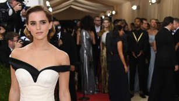

The fashion industry is on a relentless pursuit to answer the question: What does luxury mean today? When I joined the actress and activist Emma Watson on a fitting for the custom-made Calvin Klein dress she wore to the Met gala in New York, she had a suggestion.
"Luxury to me means peace of mind," she said. Specifically, knowing that what she is wearing has been ethically sourced and produced. For the past few years, Watson has resolved that all of her red carpet appearances incorporate sustainable fashion. Met gala 2016: Fashion veers into tech on the red carpet In the case of the Met gala, this meant the majority of the fabric used was made from Newlife, a yarn made from 100 percent post-consumer plastic bottles; and the detailing on the bustier was made with organic silk and cotton.
Actress-turned-activist
As an activist, Watson has had a busy few years. In 2014, I joined her at the United Nations for what has become a seminal moment in her career. The #heforshe speech she made was responsible for more than one billion social media impressions, and when she was made an official ambassador to the UN, the organization's website crashed. Emma Watson attending the "Manus x Machina: Fashion In An Age Of Technology" Costume Institute Gala at Metropolitan Museum of Art "This is absolutely a feminist issue," she says of sustainable fashion, noting that most factories today exploit female workers. MoMA's Glenn Lowry on how art can solve our problems When she was 19, Watson traveled to Bangladesh and met a factory worker who was her age but had a much different quality of life. That was a turning point for her. Watson's next foray in the cinema will be as Belle in a Beauty & The Beast remake set to come out in 2017. But until then, she's devoting herself to activism. Chanel in Cuba: Models dance through the streets of Havana "Changing the world one dress at a time," she laughed.